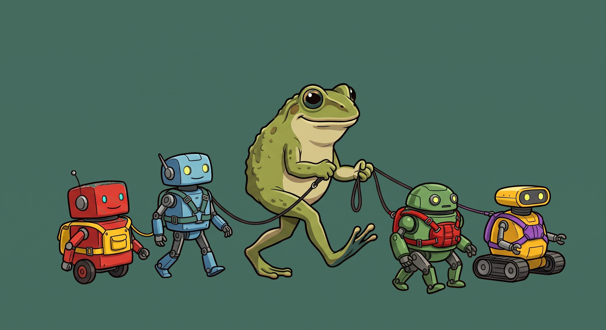

How much coding do you need to build your own reporting tools?
by Ada Homolova · November 19, 2026

You can start building a small reporting tool before you understand every line of its code. A coding agent can help choose libraries, write the code and explain how to run it. You still need to define the job and check whether the result is useful.
The amount you need to understand depends on what you're building. A personal tool for exploring public information gives you room to experiment.
Describe the job before choosing the technology
Let's say you want to build an app that helps you gather data on people or organisations and build a network of relationships.
Start with what you want to put in and get out. In this case, you would:
- enter a person's name
- have the tool search public sources
- get back a network graph of their affiliations, with links to the evidence
The neat thing is that you don't need to know exactly which technologies to use. Instead, you can ask the coding agent to suggest an approach and explain the choices:
I want to build a small research tool for my own use.
It should take a person's name and show their public affiliations
with source links. What is the simplest version I could build?
Explain the parts and what I'd need to install. Don't write code yet.Read the proposed plan. If it includes features you don't need, remove them. The robots will often design the task too big, so ask them to simplify. Telling it you just want a small personal tool can also help.
Technical experience helps you make these decisions faster. If you don't have it yet, you'll need to ask more questions and test smaller pieces. Ask what each component does, where information is stored, and how it all works.
Build one checkable part at a time
A research tool has several jobs. It needs to find pages, read their contents, extract information and display it. Each part can fail separately. So it helps to break the work into smaller problems, where each has a clear input (a person's name) and output (a list of websites with that name).
Split the work. First, fetch one page, then open the saved result and check whether it contains the actual information you need. A successful web request might have returned a bot-protection notice instead, so check each step before moving on.
Then extract information from a page you've already read. Compare the output with the text. Check names and roles, and whether an old affiliation has been presented as current. How do you want to handle it? Old affiliations are often worth keeping if they are clearly dated. Building tools involves many small decisions like these.
You can then add broader searches once those parts work. Keep in mind the limitations of the approach, for example that the results may concern a different person with the same name. Keep source links and the fetched material attached to the findings so you can check the results.
Learn enough to run and inspect it
You don't have to follow every coding decision, but a few concepts are worth learning:
- variable stores a value under a name
- function does one job and passes back a result
- loop repeats the same steps over a list
You won't write these from scratch, but recognising them makes the agent's code readable when you come back to it. You also need to know:
- how to start and stop the tool
- where it saves data
- how to tell when something has failed
When building anything, ask the agent for a short set of instructions you can follow yourself. When you hit an error, share the error message and ask what it means before fixing it. Keep working copies or use version control (like Git) so you can return to a previous version.
Watch the agent's plan as well as its output. If it starts building something you didn't ask for, stop it early. If your coding tool supports conversation branching or rewinding, you can return to any point in the conversation, but be aware that changing the conversation doesn't necessarily undo code changes.
If you keep repeating a rule, save it in your coding tool's persistent project instructions, like a system prompt or an AGENTS.md file in the folder you work in.
Know when to get help
To start, begin with a narrow task while learning the code behind it. Aim for something you can run, inspect and get working again when it breaks. Use public material and keep copies of your data. As your understanding grows, you can add complexity.
Keep in mind where the model runs. If it's hosted somewhere else, like on OpenAI's or Anthropic's servers, everything you send goes there too. Think twice before working on confidential documents, personal data and never expose any secrets like passwords or API keys.
Being able to make a tool for yourself doesn't tell you whether the software is secure or will work reliably for other people. Software your colleagues rely on, or that handles confidential material, needs a more careful review.
And last but not least: keep on learning. If the plan contains things you don't understand, ask it to explain them to you. Here is a wonderful talk on why we should keep on learning with AI and how to do it.
These ideas come from our Pondcast on building agent harnesses. If you're trying a reporting tool of your own, talk it through with us in The Pond.
Sessions like this happen twice a month. See the full session with Johan Schuijt: